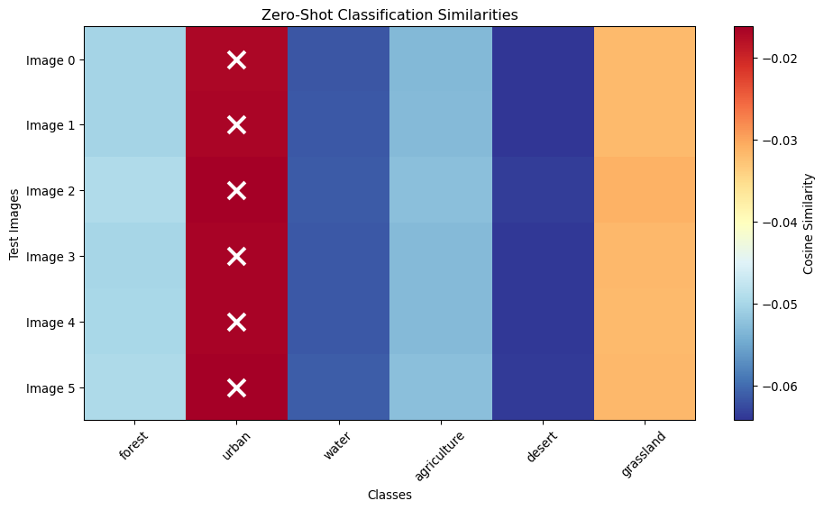
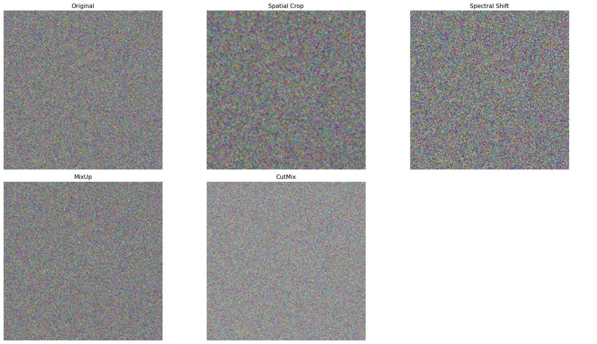
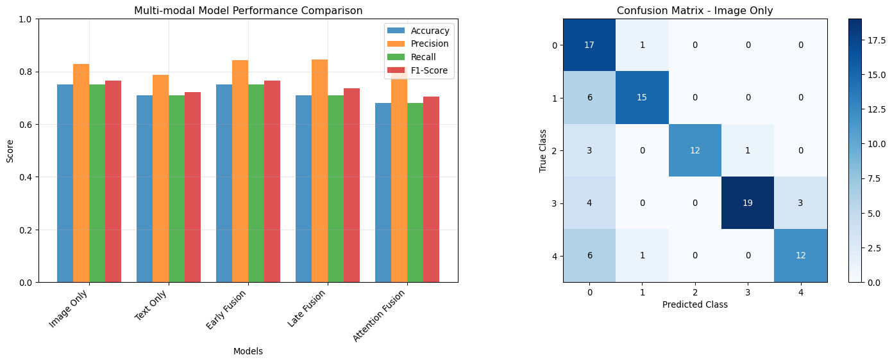
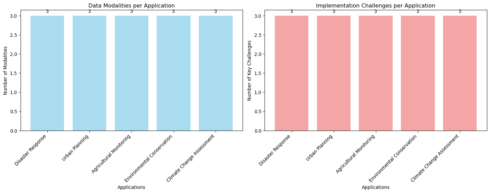

Combining different data modalities for enhanced geospatial AI
Introduction to Multi-modal Learning
Multi-modal learning combines different types of data (imagery, text, time series, etc.) to create more comprehensive and robust AI systems. In geospatial applications, this involves integrating satellite imagery with text descriptions, weather data, and other complementary information.
import torchimport torch.nn as nnimport torch.nn.functional as Fimport numpy as npimport matplotlib.pyplot as pltfrom transformers import CLIPModel, CLIPProcessor, AutoTokenizer, AutoModelimport pandas as pdfrom sklearn.metrics.pairwise import cosine_similarityprint(f"PyTorch version: {torch.__version__}")
Top-3 Text Retrievals for Each Image:
----------------------------------------
Image 0: Text indices [5, 4, 1]
Similarities: [0.06918489187955856, -0.038237396627664566, -0.05621049180626869]
Image 1: Text indices [5, 4, 1]
Similarities: [0.0625985637307167, -0.04189909249544144, -0.059174180030822754]
Image 2: Text indices [5, 4, 1]
Similarities: [0.07691492140293121, -0.03728947788476944, -0.05371379479765892]
Image 3: Text indices [5, 4, 1]
Similarities: [0.07068105041980743, -0.04271123185753822, -0.061762817203998566]
Image 4: Text indices [5, 4, 1]
Similarities: [0.07277499884366989, -0.041178036481142044, -0.05575103312730789]
Image 5: Text indices [5, 4, 1]
Similarities: [0.07348140329122543, -0.03945738822221756, -0.056685615330934525]
Image 6: Text indices [5, 4, 1]
Similarities: [0.06902169436216354, -0.04555588960647583, -0.05787457898259163]
Image 7: Text indices [5, 4, 1]
Similarities: [0.07388690114021301, -0.03497040271759033, -0.05493520572781563]
Zero-Shot Classification
def demonstrate_zero_shot_classification():"""Show zero-shot classification using learned embeddings"""# Simulate a trained contrastive model model = contrastive_model # Use the model from previous example model.eval()# Define text prompts for different land cover classes class_descriptions = {'forest': "Dense forest area with trees and vegetation",'urban': "Urban area with buildings and infrastructure", 'water': "Water body such as lake or river",'agriculture': "Agricultural land with crops and farming",'desert': "Desert area with sand and minimal vegetation",'grassland': "Grassland area with grass and open space" }# Convert descriptions to tokens (simplified)def simple_tokenize(text, max_length=20):"""Simple tokenization for demonstration""" words = text.lower().split()[:max_length]# Map words to random token IDs for demo np.random.seed(hash(text) %1000) # Consistent random mapping tokens = [np.random.randint(0, 10000) for _ in words]# Pad to max_length tokens += [0] * (max_length -len(tokens))return torch.tensor(tokens[:max_length])# Create text embeddings for each class class_embeddings = {}with torch.no_grad():for class_name, description in class_descriptions.items(): tokens = simple_tokenize(description).unsqueeze(0) _, text_embedding = model(torch.zeros(1, 6, 224, 224), tokens) class_embeddings[class_name] = text_embedding.squeeze(0)# Test images (simulate different land covers) test_images = torch.randn(6, 6, 224, 224) # 6 test imageswith torch.no_grad(): test_image_embeddings, _ = model(test_images, torch.zeros(6, 20, dtype=torch.long))# Calculate similarities and classify predictions = [] similarities_all = []for i, img_embedding inenumerate(test_image_embeddings): similarities = {}for class_name, class_embedding in class_embeddings.items(): similarity = F.cosine_similarity(img_embedding, class_embedding, dim=0) similarities[class_name] = similarity.item()# Get predicted class predicted_class =max(similarities, key=similarities.get) predictions.append(predicted_class) similarities_all.append(similarities)# Display resultsprint("Zero-Shot Classification Results:")print("="*50) class_names =list(class_descriptions.keys()) similarity_matrix = np.zeros((len(test_images), len(class_names)))for i, similarities inenumerate(similarities_all):print(f"\nTest Image {i}: Predicted as '{predictions[i]}'")for j, class_name inenumerate(class_names): similarity_matrix[i, j] = similarities[class_name]print(f" {class_name}: {similarities[class_name]:.3f}")# Visualize similarity heatmap plt.figure(figsize=(10, 6)) plt.imshow(similarity_matrix, cmap='RdYlBu_r', aspect='auto') plt.colorbar(label='Cosine Similarity') plt.xlabel('Classes') plt.ylabel('Test Images') plt.xticks(range(len(class_names)), class_names, rotation=45) plt.yticks(range(len(test_images)), [f'Image {i}'for i inrange(len(test_images))]) plt.title('Zero-Shot Classification Similarities')# Add prediction markersfor i, pred_class inenumerate(predictions): j = class_names.index(pred_class) plt.scatter(j, i, marker='x', s=200, color='white', linewidth=3) plt.tight_layout() plt.show()return predictions, similarities_allzeroshot_predictions, zeroshot_similarities = demonstrate_zero_shot_classification()
Zero-Shot Classification Results:
==================================================
Test Image 0: Predicted as 'urban'
forest: -0.050
urban: -0.017
water: -0.062
agriculture: -0.053
desert: -0.064
grassland: -0.032
Test Image 1: Predicted as 'urban'
forest: -0.050
urban: -0.017
water: -0.061
agriculture: -0.053
desert: -0.064
grassland: -0.032
Test Image 2: Predicted as 'urban'
forest: -0.049
urban: -0.016
water: -0.061
agriculture: -0.053
desert: -0.064
grassland: -0.031
Test Image 3: Predicted as 'urban'
forest: -0.050
urban: -0.017
water: -0.061
agriculture: -0.053
desert: -0.064
grassland: -0.032
Test Image 4: Predicted as 'urban'
forest: -0.050
urban: -0.017
water: -0.061
agriculture: -0.053
desert: -0.064
grassland: -0.032
Test Image 5: Predicted as 'urban'
forest: -0.049
urban: -0.016
water: -0.061
agriculture: -0.053
desert: -0.064
grassland: -0.032

Multi-modal Data Augmentation
Cross-modal Data Augmentation
def demonstrate_multimodal_augmentation():"""Show augmentation techniques for multi-modal data"""# Original data batch_size =4 original_images = torch.randn(batch_size, 6, 224, 224) original_texts = ["Forest area with dense canopy","Urban residential district", "Agricultural crop fields","Coastal wetland ecosystem" ]class MultiModalAugmentation:"""Multi-modal data augmentation techniques"""def__init__(self):self.augmentation_strategies = ['spatial_crop','spectral_shift','text_synonym','mixup','cutmix' ]def spatial_crop(self, images, texts, crop_ratio=0.8):"""Spatial cropping with corresponding text modification""" _, _, h, w = images.shape crop_h, crop_w =int(h * crop_ratio), int(w * crop_ratio)# Random crop position start_h = torch.randint(0, h - crop_h +1, (1,)).item() start_w = torch.randint(0, w - crop_w +1, (1,)).item()# Crop images cropped_images = images[:, :, start_h:start_h+crop_h, start_w:start_w+crop_w]# Resize back to original size cropped_images = F.interpolate(cropped_images, size=(h, w), mode='bilinear')# Modify texts to indicate cropping modified_texts = [f"Cropped view of {text.lower()}"for text in texts]return cropped_images, modified_textsdef spectral_shift(self, images, texts, shift_factor=0.1):"""Spectral band shifting"""# Randomly shift spectral bands shifted_images = images.clone()for i inrange(images.shape[1]): # For each spectral band shift = torch.normal(0, shift_factor, size=(1,)).item() shifted_images[:, i] = images[:, i] + shift# Clamp to valid range shifted_images = torch.clamp(shifted_images, -3, 3) # Assuming normalized data# Modify texts to indicate spectral variation modified_texts = [f"{text} with spectral variation"for text in texts]return shifted_images, modified_textsdef text_synonym_replacement(self, texts, replacement_prob=0.3):"""Replace words with synonyms"""# Simple synonym dictionary synonyms = {'forest': ['woodland', 'trees', 'vegetation'],'urban': ['city', 'metropolitan', 'developed'],'agricultural': ['farming', 'crop', 'cultivation'],'area': ['region', 'zone', 'location'],'dense': ['thick', 'concentrated', 'heavy'] } modified_texts = []for text in texts: words = text.split() new_words = []for word in words: word_lower = word.lower()if word_lower in synonyms and torch.rand(1).item() < replacement_prob: synonym = np.random.choice(synonyms[word_lower]) new_words.append(synonym)else: new_words.append(word) modified_texts.append(' '.join(new_words))return modified_textsdef mixup_multimodal(self, images, texts, alpha=0.4):"""MixUp augmentation for multi-modal data"""iflen(images) <2:return images, texts# Generate mixing weights lam = np.random.beta(alpha, alpha)# Shuffle indices for mixing batch_size = images.shape[0] indices = torch.randperm(batch_size)# Mix images mixed_images = lam * images + (1- lam) * images[indices]# Mix texts (concatenate with mixing indicator) mixed_texts = []for i inrange(len(texts)): mixed_texts.append(f"Mixed scene: {lam:.2f} * ({texts[i]}) + {1-lam:.2f} * ({texts[indices[i]]})")return mixed_images, mixed_textsdef cutmix_multimodal(self, images, texts, alpha=1.0):"""CutMix augmentation for multi-modal data"""iflen(images) <2:return images, texts lam = np.random.beta(alpha, alpha) batch_size = images.shape[0] indices = torch.randperm(batch_size) _, _, h, w = images.shape# Generate random bounding box cut_rat = np.sqrt(1.- lam) cut_w =int(w * cut_rat) cut_h =int(h * cut_rat) cx = np.random.randint(w) cy = np.random.randint(h) bbx1 = np.clip(cx - cut_w //2, 0, w) bby1 = np.clip(cy - cut_h //2, 0, h) bbx2 = np.clip(cx + cut_w //2, 0, w) bby2 = np.clip(cy + cut_h //2, 0, h)# Apply cutmix mixed_images = images.clone() mixed_images[:, :, bby1:bby2, bbx1:bbx2] = images[indices, :, bby1:bby2, bbx1:bbx2]# Mix texts mixed_texts = []for i inrange(len(texts)): mixed_texts.append(f"Scene with cutmix: {texts[i]} + patch from {texts[indices[i]]}")return mixed_images, mixed_texts# Demonstrate augmentations augmenter = MultiModalAugmentation()print("Multi-modal Data Augmentation Examples:")print("="*60)# Originalprint("Original texts:")for i, text inenumerate(original_texts):print(f" {i}: {text}")# Spatial crop cropped_imgs, cropped_texts = augmenter.spatial_crop(original_images, original_texts)print(f"\nSpatial Crop:")print(f" Image shape change: {original_images.shape} -> {cropped_imgs.shape}")for i, text inenumerate(cropped_texts[:2]): # Show first 2print(f" {i}: {text}")# Spectral shift shifted_imgs, shifted_texts = augmenter.spectral_shift(original_images, original_texts)print(f"\nSpectral Shift:")print(f" Value range change: [{original_images.min():.2f}, {original_images.max():.2f}] -> [{shifted_imgs.min():.2f}, {shifted_imgs.max():.2f}]")# Text synonym replacement synonym_texts = augmenter.text_synonym_replacement(original_texts)print(f"\nSynonym Replacement:")for i, (orig, syn) inenumerate(zip(original_texts[:2], synonym_texts[:2])):print(f" {i}: '{orig}' -> '{syn}'")# MixUp mixup_imgs, mixup_texts = augmenter.mixup_multimodal(original_images, original_texts)print(f"\nMixUp:")print(f" Example: {mixup_texts[0]}")# CutMix cutmix_imgs, cutmix_texts = augmenter.cutmix_multimodal(original_images, original_texts)print(f"\nCutMix:")print(f" Example: {cutmix_texts[0]}")# Visualize augmentation effects fig, axes = plt.subplots(2, 3, figsize=(18, 10))def visualize_image(img_tensor, ax, title):"""Visualize first 3 channels as RGB""" img_rgb = img_tensor[0, :3].detach().numpy().transpose(1, 2, 0) img_rgb = (img_rgb - img_rgb.min()) / (img_rgb.max() - img_rgb.min()) ax.imshow(img_rgb) ax.set_title(title) ax.axis('off')# Original and augmented images augmented_images = [ (original_images, "Original"), (cropped_imgs, "Spatial Crop"), (shifted_imgs, "Spectral Shift"), (mixup_imgs, "MixUp"), (cutmix_imgs, "CutMix") ]for i, (imgs, title) inenumerate(augmented_images[:6]): row, col = i //3, i %3if row <2: visualize_image(imgs, axes[row, col], title)# Hide unused subplotiflen(augmented_images) <6: axes[1, 2].axis('off') plt.tight_layout() plt.show()return augmenteraugmenter = demonstrate_multimodal_augmentation()
Multi-modal Data Augmentation Examples:
============================================================
Original texts:
0: Forest area with dense canopy
1: Urban residential district
2: Agricultural crop fields
3: Coastal wetland ecosystem
Spatial Crop:
Image shape change: torch.Size([4, 6, 224, 224]) -> torch.Size([4, 6, 224, 224])
0: Cropped view of forest area with dense canopy
1: Cropped view of urban residential district
Spectral Shift:
Value range change: [-5.53, 4.62] -> [-3.00, 3.00]
Synonym Replacement:
0: 'Forest area with dense canopy' -> 'trees area with dense canopy'
1: 'Urban residential district' -> 'Urban residential district'
MixUp:
Example: Mixed scene: 0.66 * (Forest area with dense canopy) + 0.34 * (Urban residential district)
CutMix:
Example: Scene with cutmix: Forest area with dense canopy + patch from Agricultural crop fields

Performance Evaluation Metrics
Multi-modal Evaluation
def demonstrate_multimodal_evaluation():"""Demonstrate evaluation metrics for multi-modal models"""# Simulate predictions and ground truth np.random.seed(42)# Classification task num_samples =100 num_classes =5# Ground truth y_true = np.random.randint(0, num_classes, num_samples)# Simulate different model predictions models = {'Image Only': np.random.multinomial(1, [0.8, 0.05, 0.05, 0.05, 0.05], num_samples).argmax(axis=1),'Text Only': np.random.multinomial(1, [0.1, 0.7, 0.1, 0.05, 0.05], num_samples).argmax(axis=1),'Early Fusion': np.random.multinomial(1, [0.85, 0.04, 0.04, 0.04, 0.03], num_samples).argmax(axis=1),'Late Fusion': np.random.multinomial(1, [0.87, 0.03, 0.03, 0.04, 0.03], num_samples).argmax(axis=1),'Attention Fusion': np.random.multinomial(1, [0.9, 0.025, 0.025, 0.025, 0.025], num_samples).argmax(axis=1) }# Make predictions more realistic (align with ground truth)for model_name in models:# Add some correlation with ground truth mask = np.random.random(num_samples) <0.7# 70% correct models[model_name][mask] = y_true[mask]def calculate_metrics(y_true, y_pred):"""Calculate comprehensive metrics"""from sklearn.metrics import accuracy_score, precision_recall_fscore_support, confusion_matrix accuracy = accuracy_score(y_true, y_pred) precision, recall, f1, _ = precision_recall_fscore_support(y_true, y_pred, average='weighted') conf_matrix = confusion_matrix(y_true, y_pred)return {'accuracy': accuracy,'precision': precision,'recall': recall,'f1_score': f1,'confusion_matrix': conf_matrix }# Calculate metrics for each model results = {}for model_name, predictions in models.items(): results[model_name] = calculate_metrics(y_true, predictions)# Display resultsprint("Multi-modal Model Comparison:")print("="*50) metric_names = ['accuracy', 'precision', 'recall', 'f1_score']# Create comparison table comparison_data = []for model_name, metrics in results.items(): row = [model_name] + [f"{metrics[metric]:.3f}"for metric in metric_names] comparison_data.append(row)# Print table headers = ['Model'] + [m.replace('_', ' ').title() for m in metric_names]# Simple table formatting col_widths = [max(len(str(row[i])) for row in [headers] + comparison_data) for i inrange(len(headers))]def print_row(row):return" | ".join(str(item).ljust(width) for item, width inzip(row, col_widths))print(print_row(headers))print("-"* (sum(col_widths) +len(headers) *3-1))for row in comparison_data:print(print_row(row))# Visualize performance comparison fig, (ax1, ax2) = plt.subplots(1, 2, figsize=(15, 6))# Performance metrics model_names =list(results.keys()) metrics_data = {'Accuracy': [results[name]['accuracy'] for name in model_names],'Precision': [results[name]['precision'] for name in model_names],'Recall': [results[name]['recall'] for name in model_names],'F1-Score': [results[name]['f1_score'] for name in model_names] } x = np.arange(len(model_names)) width =0.2for i, (metric_name, values) inenumerate(metrics_data.items()): ax1.bar(x + i*width, values, width, label=metric_name, alpha=0.8) ax1.set_xlabel('Models') ax1.set_ylabel('Score') ax1.set_title('Multi-modal Model Performance Comparison') ax1.set_xticks(x + width *1.5) ax1.set_xticklabels(model_names, rotation=45, ha='right') ax1.legend() ax1.grid(True, alpha=0.3) ax1.set_ylim(0, 1)# Confusion matrix for best model best_model =max(results.keys(), key=lambda x: results[x]['f1_score']) best_conf_matrix = results[best_model]['confusion_matrix'] im = ax2.imshow(best_conf_matrix, cmap='Blues') ax2.set_title(f'Confusion Matrix - {best_model}') ax2.set_xlabel('Predicted Class') ax2.set_ylabel('True Class')# Add text annotationsfor i inrange(num_classes):for j inrange(num_classes): ax2.text(j, i, str(best_conf_matrix[i, j]), ha='center', va='center', color='black'if best_conf_matrix[i, j] < best_conf_matrix.max()/2else'white') plt.colorbar(im, ax=ax2) plt.tight_layout() plt.show()# Cross-modal retrieval metricsprint(f"\nBest performing model: {best_model}")print(f"Best F1-score: {results[best_model]['f1_score']:.3f}")return resultsevaluation_results = demonstrate_multimodal_evaluation()
Multi-modal Model Comparison:
==================================================
Model | Accuracy | Precision | Recall | F1 Score
-------------------------------------------------------------
Image Only | 0.750 | 0.829 | 0.750 | 0.765
Text Only | 0.710 | 0.787 | 0.710 | 0.721
Early Fusion | 0.750 | 0.844 | 0.750 | 0.765
Late Fusion | 0.710 | 0.844 | 0.710 | 0.735
Attention Fusion | 0.680 | 0.817 | 0.680 | 0.703

Best performing model: Image Only
Best F1-score: 0.765
Real-world Applications
Applications in Geospatial AI
def demonstrate_multimodal_applications():"""Show real-world applications of multi-modal geospatial AI""" applications = {"Disaster Response": {"modalities": ["Satellite imagery", "Social media text", "Weather data"],"objective": "Rapid damage assessment and resource allocation","example_workflow": ["1. Analyze pre/post-disaster satellite images","2. Extract text from social media reports", "3. Combine with weather/climate data","4. Generate damage maps and priority areas" ],"challenges": ["Real-time processing", "Data reliability", "Multi-scale fusion"] },"Urban Planning": {"modalities": ["High-res imagery", "Demographic data", "Traffic patterns"],"objective": "Optimize city development and infrastructure","example_workflow": ["1. Analyze urban land use from imagery","2. Integrate population and economic data","3. Model traffic and mobility patterns", "4. Generate development recommendations" ],"challenges": ["Privacy concerns", "Data integration", "Temporal alignment"] },"Agricultural Monitoring": {"modalities": ["Multispectral imagery", "Weather data", "Soil information"],"objective": "Crop yield prediction and management optimization","example_workflow": ["1. Monitor crop health via spectral indices","2. Integrate weather and climate data","3. Analyze soil properties and conditions","4. Predict yields and optimize practices" ],"challenges": ["Seasonal variations", "Regional differences", "Ground truth validation"] },"Environmental Conservation": {"modalities": ["Satellite imagery", "Species data", "Climate records"],"objective": "Biodiversity monitoring and habitat protection","example_workflow": ["1. Map habitat types from imagery","2. Track species distributions and migrations","3. Monitor climate and environmental changes","4. Identify conservation priorities" ],"challenges": ["Species detection", "Long-term monitoring", "Scale integration"] },"Climate Change Assessment": {"modalities": ["Time-series imagery", "Temperature records", "Precipitation data"],"objective": "Track and predict climate impacts","example_workflow": ["1. Analyze land cover changes over time","2. Correlate with temperature trends","3. Integrate precipitation patterns","4. Model future scenarios" ],"challenges": ["Long-term data consistency", "Attribution", "Uncertainty quantification"] } }print("Multi-modal Applications in Geospatial AI:")print("="*60)for app_name, details in applications.items():print(f"\n{app_name}:")print(f" Modalities: {', '.join(details['modalities'])}")print(f" Objective: {details['objective']}")print(f" Workflow:")for step in details['example_workflow']:print(f" {step}")print(f" Key Challenges: {', '.join(details['challenges'])}")# Create application complexity visualization app_names =list(applications.keys()) modality_counts = [len(app['modalities']) for app in applications.values()] challenge_counts = [len(app['challenges']) for app in applications.values()] fig, (ax1, ax2) = plt.subplots(1, 2, figsize=(15, 6))# Modalities per application bars1 = ax1.bar(range(len(app_names)), modality_counts, color='skyblue', alpha=0.7) ax1.set_xlabel('Applications') ax1.set_ylabel('Number of Modalities') ax1.set_title('Data Modalities per Application') ax1.set_xticks(range(len(app_names))) ax1.set_xticklabels(app_names, rotation=45, ha='right')# Add value labels on barsfor bar, count inzip(bars1, modality_counts): height = bar.get_height() ax1.text(bar.get_x() + bar.get_width()/2., height +0.05,f'{count}', ha='center', va='bottom')# Challenges per application bars2 = ax2.bar(range(len(app_names)), challenge_counts, color='lightcoral', alpha=0.7) ax2.set_xlabel('Applications') ax2.set_ylabel('Number of Key Challenges') ax2.set_title('Implementation Challenges per Application') ax2.set_xticks(range(len(app_names))) ax2.set_xticklabels(app_names, rotation=45, ha='right')# Add value labels on barsfor bar, count inzip(bars2, challenge_counts): height = bar.get_height() ax2.text(bar.get_x() + bar.get_width()/2., height +0.05,f'{count}', ha='center', va='bottom') plt.tight_layout() plt.show()return applicationsmultimodal_apps = demonstrate_multimodal_applications()
Multi-modal Applications in Geospatial AI:
============================================================
Disaster Response:
Modalities: Satellite imagery, Social media text, Weather data
Objective: Rapid damage assessment and resource allocation
Workflow:
1. Analyze pre/post-disaster satellite images
2. Extract text from social media reports
3. Combine with weather/climate data
4. Generate damage maps and priority areas
Key Challenges: Real-time processing, Data reliability, Multi-scale fusion
Urban Planning:
Modalities: High-res imagery, Demographic data, Traffic patterns
Objective: Optimize city development and infrastructure
Workflow:
1. Analyze urban land use from imagery
2. Integrate population and economic data
3. Model traffic and mobility patterns
4. Generate development recommendations
Key Challenges: Privacy concerns, Data integration, Temporal alignment
Agricultural Monitoring:
Modalities: Multispectral imagery, Weather data, Soil information
Objective: Crop yield prediction and management optimization
Workflow:
1. Monitor crop health via spectral indices
2. Integrate weather and climate data
3. Analyze soil properties and conditions
4. Predict yields and optimize practices
Key Challenges: Seasonal variations, Regional differences, Ground truth validation
Environmental Conservation:
Modalities: Satellite imagery, Species data, Climate records
Objective: Biodiversity monitoring and habitat protection
Workflow:
1. Map habitat types from imagery
2. Track species distributions and migrations
3. Monitor climate and environmental changes
4. Identify conservation priorities
Key Challenges: Species detection, Long-term monitoring, Scale integration
Climate Change Assessment:
Modalities: Time-series imagery, Temperature records, Precipitation data
Objective: Track and predict climate impacts
Workflow:
1. Analyze land cover changes over time
2. Correlate with temperature trends
3. Integrate precipitation patterns
4. Model future scenarios
Key Challenges: Long-term data consistency, Attribution, Uncertainty quantification

Summary
Key concepts for multi-modal learning in geospatial AI: - Data Integration: Combining imagery, text, time series, and tabular data - Fusion Strategies: Early fusion, late fusion, and attention-based approaches
- Architecture Patterns: Cross-modal attention, contrastive learning, joint embeddings - Contrastive Learning: CLIP-style training for image-text understanding - Data Augmentation: Cross-modal augmentation techniques - Evaluation Metrics: Multi-modal performance assessment - Applications: Disaster response, urban planning, agriculture, conservation - Challenges: Data alignment, scale differences, computational complexity
Source Code
---title: "Multi-modal Learning"subtitle: "Combining different data modalities for enhanced geospatial AI"jupyter: geoaiformat: html: code-fold: false---## Introduction to Multi-modal LearningMulti-modal learning combines different types of data (imagery, text, time series, etc.) to create more comprehensive and robust AI systems. In geospatial applications, this involves integrating satellite imagery with text descriptions, weather data, and other complementary information.```{python}import torchimport torch.nn as nnimport torch.nn.functional as Fimport numpy as npimport matplotlib.pyplot as pltfrom transformers import CLIPModel, CLIPProcessor, AutoTokenizer, AutoModelimport pandas as pdfrom sklearn.metrics.pairwise import cosine_similarityprint(f"PyTorch version: {torch.__version__}")```## Types of Multi-modal Data in Geospatial AI### Common Modality Combinations```{python}def demonstrate_multimodal_data_types():"""Show different types of multi-modal combinations in geospatial AI""" modality_combinations = {"Image + Text": {"example": "Satellite image + location description","use_cases": ["Image captioning", "Location search", "Content-based retrieval"],"challenges": ["Semantic gap", "Text-image alignment", "Scale differences"] },"Multi-spectral + SAR": {"example": "Optical + Radar imagery", "use_cases": ["All-weather monitoring", "Improved classification", "Change detection"],"challenges": ["Registration", "Resolution differences", "Fusion strategies"] },"Image + Time Series": {"example": "Satellite imagery + weather/climate data","use_cases": ["Crop yield prediction", "Disaster monitoring", "Environmental modeling"],"challenges": ["Temporal alignment", "Different sampling rates", "Multi-scale fusion"] },"Image + Tabular": {"example": "Remote sensing + demographic/economic data","use_cases": ["Socioeconomic mapping", "Urban planning", "Poverty estimation"],"challenges": ["Spatial alignment", "Feature engineering", "Scale mismatch"] },"Multi-resolution": {"example": "High-res + Low-res imagery","use_cases": ["Super-resolution", "Multi-scale analysis", "Data fusion"],"challenges": ["Resolution alignment", "Information preservation", "Computational efficiency"] } }print("Multi-modal Data Types in Geospatial AI:")print("="*60)for modality, details in modality_combinations.items():print(f"\n{modality}:")print(f" Example: {details['example']}")print(f" Use cases: {', '.join(details['use_cases'])}")print(f" Challenges: {', '.join(details['challenges'])}")return modality_combinationsmultimodal_types = demonstrate_multimodal_data_types()```### Data Preprocessing for Multi-modal Learning```{python}def create_multimodal_preprocessing_pipeline():"""Demonstrate preprocessing for multi-modal geospatial data"""# Simulate different data modalities np.random.seed(42)# 1. Satellite imagery (multispectral) batch_size, channels, height, width =4, 6, 224, 224 satellite_images = torch.randn(batch_size, channels, height, width)# 2. Text descriptions text_descriptions = ["Forest area with dense vegetation and high canopy cover","Urban residential area with mixed building types","Agricultural land with crop fields and irrigation","Coastal wetland area with water bodies and marsh" ]# 3. Tabular metadata metadata = pd.DataFrame({'location_id': [f'LOC_{i:03d}'for i inrange(batch_size)],'latitude': [45.5+ i*0.1for i inrange(batch_size)],'longitude': [-122.5+ i*0.1for i inrange(batch_size)],'elevation': [100+ i*50for i inrange(batch_size)],'temperature': [15.5+ i*2for i inrange(batch_size)],'precipitation': [800+ i*100for i inrange(batch_size)],'season': ['spring', 'summer', 'autumn', 'winter'] })# 4. Time series data time_steps =52# Weekly data for a year time_series = torch.randn(batch_size, time_steps, 3) # NDVI, temperature, precipitationprint("Multi-modal Data Examples:")print("="*40)print(f"Satellite images shape: {satellite_images.shape}")print(f"Text descriptions: {len(text_descriptions)} samples")print(f"Metadata shape: {metadata.shape}")print(f"Time series shape: {time_series.shape}")# Preprocessing functionsdef preprocess_images(images, target_size=(224, 224)):"""Preprocess satellite images"""# Normalize to [0, 1] images = (images - images.min()) / (images.max() - images.min())# Resize if needed (simplified)if images.shape[-2:] != target_size: images = F.interpolate(images, size=target_size, mode='bilinear', align_corners=False)return imagesdef preprocess_text(texts, max_length=77):"""Preprocess text descriptions (simplified tokenization)"""# In practice, use proper tokenizers like CLIP or BERT processed_texts = []for text in texts:# Simple word tokenization words = text.lower().split()[:max_length]# Pad to max_length words += ['<pad>'] * (max_length -len(words)) processed_texts.append(words)return processed_textsdef preprocess_tabular(metadata):"""Preprocess tabular metadata""" processed = metadata.copy()# Normalize numerical features numerical_cols = ['latitude', 'longitude', 'elevation', 'temperature', 'precipitation']for col in numerical_cols: processed[col] = (processed[col] - processed[col].mean()) / processed[col].std()# Encode categorical features (simplified) season_encoding = {'spring': 0, 'summer': 1, 'autumn': 2, 'winter': 3} processed['season_encoded'] = processed['season'].map(season_encoding)return processeddef preprocess_time_series(ts_data, normalize=True):"""Preprocess time series data"""if normalize:# Normalize across time dimension mean = ts_data.mean(dim=1, keepdim=True) std = ts_data.std(dim=1, keepdim=True) ts_data = (ts_data - mean) / (std +1e-8)return ts_data# Apply preprocessing processed_images = preprocess_images(satellite_images) processed_texts = preprocess_text(text_descriptions) processed_metadata = preprocess_tabular(metadata) processed_time_series = preprocess_time_series(time_series)print("\nAfter Preprocessing:")print(f"Images range: [{processed_images.min():.3f}, {processed_images.max():.3f}]")print(f"Text tokens per sample: {len(processed_texts[0])}")print("Metadata columns:", list(processed_metadata.columns))print(f"Time series normalized: mean={processed_time_series.mean():.3f}, std={processed_time_series.std():.3f}")return {'images': processed_images,'texts': processed_texts,'metadata': processed_metadata,'time_series': processed_time_series }preprocessed_data = create_multimodal_preprocessing_pipeline()```## Multi-modal Architecture Patterns### Early Fusion vs Late Fusion```{python}class EarlyFusionModel(nn.Module):"""Early fusion: combine features at input level"""def__init__(self, image_channels=6, text_vocab_size=1000, tabular_features=5, hidden_dim=512, num_classes=10):super().__init__()# Image encoderself.image_encoder = nn.Sequential( nn.Conv2d(image_channels, 64, 7, stride=2, padding=3), nn.ReLU(), nn.AdaptiveAvgPool2d((4, 4)), nn.Flatten(), nn.Linear(64*16, hidden_dim) )# Text encoder (simplified)self.text_encoder = nn.Sequential( nn.Embedding(text_vocab_size, 256), nn.LSTM(256, hidden_dim//2, batch_first=True), )# Tabular encoderself.tabular_encoder = nn.Sequential( nn.Linear(tabular_features, hidden_dim//2), nn.ReLU(), nn.Linear(hidden_dim//2, hidden_dim) )# Early fusion: concatenate features# Image (hidden_dim) + Text (hidden_dim//2) + Tabular (hidden_dim) fusion_input_dim = hidden_dim + hidden_dim//2+ hidden_dimself.fusion_layer = nn.Sequential( nn.Linear(fusion_input_dim, hidden_dim), # Combined features nn.ReLU(), nn.Dropout(0.3), nn.Linear(hidden_dim, num_classes) )def forward(self, images, text_tokens, tabular_data):# Encode each modality image_features =self.image_encoder(images)# Text encoding (simplified - use last hidden state) text_features, (h_n, c_n) =self.text_encoder(text_tokens) text_features = h_n[-1] # Use last hidden state tabular_features =self.tabular_encoder(tabular_data)# Early fusion: concatenate features combined_features = torch.cat([image_features, text_features, tabular_features], dim=1)# Final prediction output =self.fusion_layer(combined_features)return output, {'image_features': image_features,'text_features': text_features,'tabular_features': tabular_features,'combined_features': combined_features }class LateFusionModel(nn.Module):"""Late fusion: combine predictions from separate models"""def__init__(self, image_channels=6, text_vocab_size=1000, tabular_features=5, hidden_dim=512, num_classes=10):super().__init__()# Separate encoders for each modalityself.image_branch = nn.Sequential( nn.Conv2d(image_channels, 64, 7, stride=2, padding=3), nn.ReLU(), nn.AdaptiveAvgPool2d((4, 4)), nn.Flatten(), nn.Linear(64*16, hidden_dim), nn.ReLU(), nn.Linear(hidden_dim, num_classes) )self.text_branch = nn.Sequential( nn.Embedding(text_vocab_size, 256), nn.LSTM(256, hidden_dim//2, batch_first=True), )self.text_classifier = nn.Linear(hidden_dim//2, num_classes)self.tabular_branch = nn.Sequential( nn.Linear(tabular_features, hidden_dim//2), nn.ReLU(), nn.Linear(hidden_dim//2, num_classes) )# Fusion weights (learnable)self.fusion_weights = nn.Parameter(torch.ones(3) /3)def forward(self, images, text_tokens, tabular_data):# Get predictions from each branch image_logits =self.image_branch(images) text_features, (h_n, c_n) =self.text_branch(text_tokens) text_logits =self.text_classifier(h_n[-1]) tabular_logits =self.tabular_branch(tabular_data)# Late fusion: weighted combination of predictions fusion_weights = F.softmax(self.fusion_weights, dim=0) combined_logits = (fusion_weights[0] * image_logits + fusion_weights[1] * text_logits + fusion_weights[2] * tabular_logits)return combined_logits, {'image_logits': image_logits,'text_logits': text_logits,'tabular_logits': tabular_logits,'fusion_weights': fusion_weights }# Compare architecturesdef compare_fusion_architectures():"""Compare early vs late fusion approaches"""# Create sample data batch_size =4 images = torch.randn(batch_size, 6, 224, 224) text_tokens = torch.randint(0, 1000, (batch_size, 20)) tabular_data = torch.randn(batch_size, 5)# Create models early_fusion = EarlyFusionModel() late_fusion = LateFusionModel()# Count parameters early_params =sum(p.numel() for p in early_fusion.parameters()) late_params =sum(p.numel() for p in late_fusion.parameters())print("Fusion Architecture Comparison:")print("="*50)print(f"Early Fusion Parameters: {early_params:,}")print(f"Late Fusion Parameters: {late_params:,}")# Forward passwith torch.no_grad(): early_output, early_features = early_fusion(images, text_tokens, tabular_data) late_output, late_features = late_fusion(images, text_tokens, tabular_data)print(f"\nOutput shapes:")print(f"Early Fusion: {early_output.shape}")print(f"Late Fusion: {late_output.shape}")print(f"\nLate Fusion Weights: {late_features['fusion_weights']}")return early_fusion, late_fusionearly_model, late_model = compare_fusion_architectures()```### Attention-based Fusion```{python}class CrossModalAttentionFusion(nn.Module):"""Cross-modal attention fusion mechanism"""def__init__(self, feature_dim=512, num_heads=8):super().__init__()self.feature_dim = feature_dimself.num_heads = num_heads# Cross-attention layersself.image_to_text_attention = nn.MultiheadAttention(feature_dim, num_heads, batch_first=True)self.text_to_image_attention = nn.MultiheadAttention(feature_dim, num_heads, batch_first=True)# Self-attention for final fusionself.fusion_attention = nn.MultiheadAttention(feature_dim, num_heads, batch_first=True)# Layer normalizationself.norm1 = nn.LayerNorm(feature_dim)self.norm2 = nn.LayerNorm(feature_dim)self.norm3 = nn.LayerNorm(feature_dim)# Final classifierself.classifier = nn.Linear(feature_dim *2, 10) # 10 classesdef forward(self, image_features, text_features):""" image_features: [batch_size, num_patches, feature_dim] text_features: [batch_size, seq_len, feature_dim] """# Cross-modal attention: image attending to text image_attended, image_attention_weights =self.image_to_text_attention( image_features, text_features, text_features ) image_attended =self.norm1(image_features + image_attended)# Cross-modal attention: text attending to image text_attended, text_attention_weights =self.text_to_image_attention( text_features, image_features, image_features ) text_attended =self.norm2(text_features + text_attended)# Global pooling image_global = image_attended.mean(dim=1) # [batch_size, feature_dim] text_global = text_attended.mean(dim=1) # [batch_size, feature_dim]# Concatenate and classify combined = torch.cat([image_global, text_global], dim=1) output =self.classifier(combined)return output, {'image_attention_weights': image_attention_weights,'text_attention_weights': text_attention_weights,'image_global': image_global,'text_global': text_global }# Demonstrate cross-modal attentiondef demonstrate_cross_modal_attention():"""Show cross-modal attention mechanism""" batch_size, feature_dim =4, 512 num_image_patches, seq_len =16, 10# Create sample features image_features = torch.randn(batch_size, num_image_patches, feature_dim) text_features = torch.randn(batch_size, seq_len, feature_dim)# Create attention model attention_fusion = CrossModalAttentionFusion(feature_dim=feature_dim)# Forward passwith torch.no_grad(): output, attention_info = attention_fusion(image_features, text_features)print("Cross-modal Attention Results:")print("="*40)print(f"Input shapes:")print(f" Image features: {image_features.shape}")print(f" Text features: {text_features.shape}")print(f"Output shape: {output.shape}")# Visualize attention weights fig, axes = plt.subplots(1, 2, figsize=(15, 5))# Image-to-text attention (first sample) img_to_text_attn = attention_info['image_attention_weights'][0].detach().numpy() im1 = axes[0].imshow(img_to_text_attn, cmap='Blues', aspect='auto') axes[0].set_title('Image-to-Text Attention') axes[0].set_xlabel('Text Positions') axes[0].set_ylabel('Image Patches') plt.colorbar(im1, ax=axes[0])# Text-to-image attention (first sample) text_to_img_attn = attention_info['text_attention_weights'][0].detach().numpy() im2 = axes[1].imshow(text_to_img_attn, cmap='Reds', aspect='auto') axes[1].set_title('Text-to-Image Attention') axes[1].set_xlabel('Image Patches') axes[1].set_ylabel('Text Positions') plt.colorbar(im2, ax=axes[1]) plt.tight_layout() plt.show()return attention_fusionattention_model = demonstrate_cross_modal_attention()```## Contrastive Learning for Multi-modal Data### CLIP-style Contrastive Learning```{python}class ContrastiveLearningModel(nn.Module):"""CLIP-style contrastive learning for image-text pairs"""def__init__(self, image_encoder_dim=2048, text_encoder_dim=768, projection_dim=512):super().__init__()# Simplified image encoderself.image_encoder = nn.Sequential( nn.Conv2d(6, 64, 7, stride=2, padding=3), # 6 channels for multispectral nn.ReLU(), nn.Conv2d(64, 128, 5, stride=2, padding=2), nn.ReLU(), nn.Conv2d(128, 256, 3, stride=2, padding=1), nn.ReLU(), nn.AdaptiveAvgPool2d((1, 1)), nn.Flatten(), nn.Linear(256, image_encoder_dim) )# Simplified text encoderself.text_encoder = nn.Sequential( nn.Embedding(10000, 256), # Vocab size 10000 nn.LSTM(256, text_encoder_dim//2, batch_first=True, bidirectional=True), )# Projection headsself.image_projection = nn.Sequential( nn.Linear(image_encoder_dim, projection_dim), nn.ReLU(), nn.Linear(projection_dim, projection_dim) )self.text_projection = nn.Sequential( nn.Linear(text_encoder_dim, projection_dim), nn.ReLU(), nn.Linear(projection_dim, projection_dim) )# Temperature parameter for contrastive lossself.temperature = nn.Parameter(torch.tensor(0.07))def forward(self, images, text_tokens):# Encode images image_features =self.image_encoder(images) image_embeddings =self.image_projection(image_features)# Encode text text_features, (h_n, c_n) =self.text_encoder(text_tokens)# Use final hidden states from both directions text_features = torch.cat([h_n[-2], h_n[-1]], dim=1) # Concatenate bidirectional text_embeddings =self.text_projection(text_features)# Normalize embeddings image_embeddings = F.normalize(image_embeddings, dim=1) text_embeddings = F.normalize(text_embeddings, dim=1)return image_embeddings, text_embeddingsdef contrastive_loss(self, image_embeddings, text_embeddings):"""Calculate contrastive loss between image and text embeddings""" batch_size = image_embeddings.shape[0]# Calculate similarity matrix similarity_matrix = torch.matmul(image_embeddings, text_embeddings.T) /self.temperature# Create labels (diagonal should be positive pairs) labels = torch.arange(batch_size, device=image_embeddings.device)# Contrastive loss (symmetric) loss_img_to_text = F.cross_entropy(similarity_matrix, labels) loss_text_to_img = F.cross_entropy(similarity_matrix.T, labels) total_loss = (loss_img_to_text + loss_text_to_img) /2return total_loss, similarity_matrixdef demonstrate_contrastive_learning():"""Demonstrate contrastive learning training"""# Create model contrastive_model = ContrastiveLearningModel()# Sample data batch_size =8 images = torch.randn(batch_size, 6, 224, 224) text_tokens = torch.randint(0, 10000, (batch_size, 20))# Forward pass image_embeddings, text_embeddings = contrastive_model(images, text_tokens)# Calculate loss loss, similarity_matrix = contrastive_model.contrastive_loss(image_embeddings, text_embeddings)print("Contrastive Learning Results:")print("="*40)print(f"Image embeddings shape: {image_embeddings.shape}")print(f"Text embeddings shape: {text_embeddings.shape}")print(f"Contrastive loss: {loss.item():.4f}")print(f"Temperature: {contrastive_model.temperature.item():.4f}")# Visualize similarity matrix plt.figure(figsize=(8, 6)) plt.imshow(similarity_matrix.detach().numpy(), cmap='RdBu_r', aspect='equal') plt.colorbar(label='Similarity Score') plt.title('Image-Text Similarity Matrix') plt.xlabel('Text Samples') plt.ylabel('Image Samples')# Highlight diagonal (positive pairs)for i inrange(batch_size): plt.scatter(i, i, marker='x', s=100, color='white', linewidth=2) plt.tight_layout() plt.show()# Show top-k retrievalsdef show_retrievals(similarity_matrix, k=3):"""Show top-k text retrievals for each image"""print(f"\nTop-{k} Text Retrievals for Each Image:")print("-"*40)for img_idx inrange(batch_size): similarities = similarity_matrix[img_idx] top_k_indices = similarities.topk(k).indicesprint(f"Image {img_idx}: Text indices {top_k_indices.tolist()}")print(f" Similarities: {similarities[top_k_indices].tolist()}") show_retrievals(similarity_matrix)return contrastive_modelcontrastive_model = demonstrate_contrastive_learning()```### Zero-Shot Classification```{python}def demonstrate_zero_shot_classification():"""Show zero-shot classification using learned embeddings"""# Simulate a trained contrastive model model = contrastive_model # Use the model from previous example model.eval()# Define text prompts for different land cover classes class_descriptions = {'forest': "Dense forest area with trees and vegetation",'urban': "Urban area with buildings and infrastructure", 'water': "Water body such as lake or river",'agriculture': "Agricultural land with crops and farming",'desert': "Desert area with sand and minimal vegetation",'grassland': "Grassland area with grass and open space" }# Convert descriptions to tokens (simplified)def simple_tokenize(text, max_length=20):"""Simple tokenization for demonstration""" words = text.lower().split()[:max_length]# Map words to random token IDs for demo np.random.seed(hash(text) %1000) # Consistent random mapping tokens = [np.random.randint(0, 10000) for _ in words]# Pad to max_length tokens += [0] * (max_length -len(tokens))return torch.tensor(tokens[:max_length])# Create text embeddings for each class class_embeddings = {}with torch.no_grad():for class_name, description in class_descriptions.items(): tokens = simple_tokenize(description).unsqueeze(0) _, text_embedding = model(torch.zeros(1, 6, 224, 224), tokens) class_embeddings[class_name] = text_embedding.squeeze(0)# Test images (simulate different land covers) test_images = torch.randn(6, 6, 224, 224) # 6 test imageswith torch.no_grad(): test_image_embeddings, _ = model(test_images, torch.zeros(6, 20, dtype=torch.long))# Calculate similarities and classify predictions = [] similarities_all = []for i, img_embedding inenumerate(test_image_embeddings): similarities = {}for class_name, class_embedding in class_embeddings.items(): similarity = F.cosine_similarity(img_embedding, class_embedding, dim=0) similarities[class_name] = similarity.item()# Get predicted class predicted_class =max(similarities, key=similarities.get) predictions.append(predicted_class) similarities_all.append(similarities)# Display resultsprint("Zero-Shot Classification Results:")print("="*50) class_names =list(class_descriptions.keys()) similarity_matrix = np.zeros((len(test_images), len(class_names)))for i, similarities inenumerate(similarities_all):print(f"\nTest Image {i}: Predicted as '{predictions[i]}'")for j, class_name inenumerate(class_names): similarity_matrix[i, j] = similarities[class_name]print(f" {class_name}: {similarities[class_name]:.3f}")# Visualize similarity heatmap plt.figure(figsize=(10, 6)) plt.imshow(similarity_matrix, cmap='RdYlBu_r', aspect='auto') plt.colorbar(label='Cosine Similarity') plt.xlabel('Classes') plt.ylabel('Test Images') plt.xticks(range(len(class_names)), class_names, rotation=45) plt.yticks(range(len(test_images)), [f'Image {i}'for i inrange(len(test_images))]) plt.title('Zero-Shot Classification Similarities')# Add prediction markersfor i, pred_class inenumerate(predictions): j = class_names.index(pred_class) plt.scatter(j, i, marker='x', s=200, color='white', linewidth=3) plt.tight_layout() plt.show()return predictions, similarities_allzeroshot_predictions, zeroshot_similarities = demonstrate_zero_shot_classification()```## Multi-modal Data Augmentation### Cross-modal Data Augmentation```{python}def demonstrate_multimodal_augmentation():"""Show augmentation techniques for multi-modal data"""# Original data batch_size =4 original_images = torch.randn(batch_size, 6, 224, 224) original_texts = ["Forest area with dense canopy","Urban residential district", "Agricultural crop fields","Coastal wetland ecosystem" ]class MultiModalAugmentation:"""Multi-modal data augmentation techniques"""def__init__(self):self.augmentation_strategies = ['spatial_crop','spectral_shift','text_synonym','mixup','cutmix' ]def spatial_crop(self, images, texts, crop_ratio=0.8):"""Spatial cropping with corresponding text modification""" _, _, h, w = images.shape crop_h, crop_w =int(h * crop_ratio), int(w * crop_ratio)# Random crop position start_h = torch.randint(0, h - crop_h +1, (1,)).item() start_w = torch.randint(0, w - crop_w +1, (1,)).item()# Crop images cropped_images = images[:, :, start_h:start_h+crop_h, start_w:start_w+crop_w]# Resize back to original size cropped_images = F.interpolate(cropped_images, size=(h, w), mode='bilinear')# Modify texts to indicate cropping modified_texts = [f"Cropped view of {text.lower()}"for text in texts]return cropped_images, modified_textsdef spectral_shift(self, images, texts, shift_factor=0.1):"""Spectral band shifting"""# Randomly shift spectral bands shifted_images = images.clone()for i inrange(images.shape[1]): # For each spectral band shift = torch.normal(0, shift_factor, size=(1,)).item() shifted_images[:, i] = images[:, i] + shift# Clamp to valid range shifted_images = torch.clamp(shifted_images, -3, 3) # Assuming normalized data# Modify texts to indicate spectral variation modified_texts = [f"{text} with spectral variation"for text in texts]return shifted_images, modified_textsdef text_synonym_replacement(self, texts, replacement_prob=0.3):"""Replace words with synonyms"""# Simple synonym dictionary synonyms = {'forest': ['woodland', 'trees', 'vegetation'],'urban': ['city', 'metropolitan', 'developed'],'agricultural': ['farming', 'crop', 'cultivation'],'area': ['region', 'zone', 'location'],'dense': ['thick', 'concentrated', 'heavy'] } modified_texts = []for text in texts: words = text.split() new_words = []for word in words: word_lower = word.lower()if word_lower in synonyms and torch.rand(1).item() < replacement_prob: synonym = np.random.choice(synonyms[word_lower]) new_words.append(synonym)else: new_words.append(word) modified_texts.append(' '.join(new_words))return modified_textsdef mixup_multimodal(self, images, texts, alpha=0.4):"""MixUp augmentation for multi-modal data"""iflen(images) <2:return images, texts# Generate mixing weights lam = np.random.beta(alpha, alpha)# Shuffle indices for mixing batch_size = images.shape[0] indices = torch.randperm(batch_size)# Mix images mixed_images = lam * images + (1- lam) * images[indices]# Mix texts (concatenate with mixing indicator) mixed_texts = []for i inrange(len(texts)): mixed_texts.append(f"Mixed scene: {lam:.2f} * ({texts[i]}) + {1-lam:.2f} * ({texts[indices[i]]})")return mixed_images, mixed_textsdef cutmix_multimodal(self, images, texts, alpha=1.0):"""CutMix augmentation for multi-modal data"""iflen(images) <2:return images, texts lam = np.random.beta(alpha, alpha) batch_size = images.shape[0] indices = torch.randperm(batch_size) _, _, h, w = images.shape# Generate random bounding box cut_rat = np.sqrt(1.- lam) cut_w =int(w * cut_rat) cut_h =int(h * cut_rat) cx = np.random.randint(w) cy = np.random.randint(h) bbx1 = np.clip(cx - cut_w //2, 0, w) bby1 = np.clip(cy - cut_h //2, 0, h) bbx2 = np.clip(cx + cut_w //2, 0, w) bby2 = np.clip(cy + cut_h //2, 0, h)# Apply cutmix mixed_images = images.clone() mixed_images[:, :, bby1:bby2, bbx1:bbx2] = images[indices, :, bby1:bby2, bbx1:bbx2]# Mix texts mixed_texts = []for i inrange(len(texts)): mixed_texts.append(f"Scene with cutmix: {texts[i]} + patch from {texts[indices[i]]}")return mixed_images, mixed_texts# Demonstrate augmentations augmenter = MultiModalAugmentation()print("Multi-modal Data Augmentation Examples:")print("="*60)# Originalprint("Original texts:")for i, text inenumerate(original_texts):print(f" {i}: {text}")# Spatial crop cropped_imgs, cropped_texts = augmenter.spatial_crop(original_images, original_texts)print(f"\nSpatial Crop:")print(f" Image shape change: {original_images.shape} -> {cropped_imgs.shape}")for i, text inenumerate(cropped_texts[:2]): # Show first 2print(f" {i}: {text}")# Spectral shift shifted_imgs, shifted_texts = augmenter.spectral_shift(original_images, original_texts)print(f"\nSpectral Shift:")print(f" Value range change: [{original_images.min():.2f}, {original_images.max():.2f}] -> [{shifted_imgs.min():.2f}, {shifted_imgs.max():.2f}]")# Text synonym replacement synonym_texts = augmenter.text_synonym_replacement(original_texts)print(f"\nSynonym Replacement:")for i, (orig, syn) inenumerate(zip(original_texts[:2], synonym_texts[:2])):print(f" {i}: '{orig}' -> '{syn}'")# MixUp mixup_imgs, mixup_texts = augmenter.mixup_multimodal(original_images, original_texts)print(f"\nMixUp:")print(f" Example: {mixup_texts[0]}")# CutMix cutmix_imgs, cutmix_texts = augmenter.cutmix_multimodal(original_images, original_texts)print(f"\nCutMix:")print(f" Example: {cutmix_texts[0]}")# Visualize augmentation effects fig, axes = plt.subplots(2, 3, figsize=(18, 10))def visualize_image(img_tensor, ax, title):"""Visualize first 3 channels as RGB""" img_rgb = img_tensor[0, :3].detach().numpy().transpose(1, 2, 0) img_rgb = (img_rgb - img_rgb.min()) / (img_rgb.max() - img_rgb.min()) ax.imshow(img_rgb) ax.set_title(title) ax.axis('off')# Original and augmented images augmented_images = [ (original_images, "Original"), (cropped_imgs, "Spatial Crop"), (shifted_imgs, "Spectral Shift"), (mixup_imgs, "MixUp"), (cutmix_imgs, "CutMix") ]for i, (imgs, title) inenumerate(augmented_images[:6]): row, col = i //3, i %3if row <2: visualize_image(imgs, axes[row, col], title)# Hide unused subplotiflen(augmented_images) <6: axes[1, 2].axis('off') plt.tight_layout() plt.show()return augmenteraugmenter = demonstrate_multimodal_augmentation()```## Performance Evaluation Metrics### Multi-modal Evaluation```{python}def demonstrate_multimodal_evaluation():"""Demonstrate evaluation metrics for multi-modal models"""# Simulate predictions and ground truth np.random.seed(42)# Classification task num_samples =100 num_classes =5# Ground truth y_true = np.random.randint(0, num_classes, num_samples)# Simulate different model predictions models = {'Image Only': np.random.multinomial(1, [0.8, 0.05, 0.05, 0.05, 0.05], num_samples).argmax(axis=1),'Text Only': np.random.multinomial(1, [0.1, 0.7, 0.1, 0.05, 0.05], num_samples).argmax(axis=1),'Early Fusion': np.random.multinomial(1, [0.85, 0.04, 0.04, 0.04, 0.03], num_samples).argmax(axis=1),'Late Fusion': np.random.multinomial(1, [0.87, 0.03, 0.03, 0.04, 0.03], num_samples).argmax(axis=1),'Attention Fusion': np.random.multinomial(1, [0.9, 0.025, 0.025, 0.025, 0.025], num_samples).argmax(axis=1) }# Make predictions more realistic (align with ground truth)for model_name in models:# Add some correlation with ground truth mask = np.random.random(num_samples) <0.7# 70% correct models[model_name][mask] = y_true[mask]def calculate_metrics(y_true, y_pred):"""Calculate comprehensive metrics"""from sklearn.metrics import accuracy_score, precision_recall_fscore_support, confusion_matrix accuracy = accuracy_score(y_true, y_pred) precision, recall, f1, _ = precision_recall_fscore_support(y_true, y_pred, average='weighted') conf_matrix = confusion_matrix(y_true, y_pred)return {'accuracy': accuracy,'precision': precision,'recall': recall,'f1_score': f1,'confusion_matrix': conf_matrix }# Calculate metrics for each model results = {}for model_name, predictions in models.items(): results[model_name] = calculate_metrics(y_true, predictions)# Display resultsprint("Multi-modal Model Comparison:")print("="*50) metric_names = ['accuracy', 'precision', 'recall', 'f1_score']# Create comparison table comparison_data = []for model_name, metrics in results.items(): row = [model_name] + [f"{metrics[metric]:.3f}"for metric in metric_names] comparison_data.append(row)# Print table headers = ['Model'] + [m.replace('_', ' ').title() for m in metric_names]# Simple table formatting col_widths = [max(len(str(row[i])) for row in [headers] + comparison_data) for i inrange(len(headers))]def print_row(row):return" | ".join(str(item).ljust(width) for item, width inzip(row, col_widths))print(print_row(headers))print("-"* (sum(col_widths) +len(headers) *3-1))for row in comparison_data:print(print_row(row))# Visualize performance comparison fig, (ax1, ax2) = plt.subplots(1, 2, figsize=(15, 6))# Performance metrics model_names =list(results.keys()) metrics_data = {'Accuracy': [results[name]['accuracy'] for name in model_names],'Precision': [results[name]['precision'] for name in model_names],'Recall': [results[name]['recall'] for name in model_names],'F1-Score': [results[name]['f1_score'] for name in model_names] } x = np.arange(len(model_names)) width =0.2for i, (metric_name, values) inenumerate(metrics_data.items()): ax1.bar(x + i*width, values, width, label=metric_name, alpha=0.8) ax1.set_xlabel('Models') ax1.set_ylabel('Score') ax1.set_title('Multi-modal Model Performance Comparison') ax1.set_xticks(x + width *1.5) ax1.set_xticklabels(model_names, rotation=45, ha='right') ax1.legend() ax1.grid(True, alpha=0.3) ax1.set_ylim(0, 1)# Confusion matrix for best model best_model =max(results.keys(), key=lambda x: results[x]['f1_score']) best_conf_matrix = results[best_model]['confusion_matrix'] im = ax2.imshow(best_conf_matrix, cmap='Blues') ax2.set_title(f'Confusion Matrix - {best_model}') ax2.set_xlabel('Predicted Class') ax2.set_ylabel('True Class')# Add text annotationsfor i inrange(num_classes):for j inrange(num_classes): ax2.text(j, i, str(best_conf_matrix[i, j]), ha='center', va='center', color='black'if best_conf_matrix[i, j] < best_conf_matrix.max()/2else'white') plt.colorbar(im, ax=ax2) plt.tight_layout() plt.show()# Cross-modal retrieval metricsprint(f"\nBest performing model: {best_model}")print(f"Best F1-score: {results[best_model]['f1_score']:.3f}")return resultsevaluation_results = demonstrate_multimodal_evaluation()```## Real-world Applications### Applications in Geospatial AI```{python}def demonstrate_multimodal_applications():"""Show real-world applications of multi-modal geospatial AI""" applications = {"Disaster Response": {"modalities": ["Satellite imagery", "Social media text", "Weather data"],"objective": "Rapid damage assessment and resource allocation","example_workflow": ["1. Analyze pre/post-disaster satellite images","2. Extract text from social media reports", "3. Combine with weather/climate data","4. Generate damage maps and priority areas" ],"challenges": ["Real-time processing", "Data reliability", "Multi-scale fusion"] },"Urban Planning": {"modalities": ["High-res imagery", "Demographic data", "Traffic patterns"],"objective": "Optimize city development and infrastructure","example_workflow": ["1. Analyze urban land use from imagery","2. Integrate population and economic data","3. Model traffic and mobility patterns", "4. Generate development recommendations" ],"challenges": ["Privacy concerns", "Data integration", "Temporal alignment"] },"Agricultural Monitoring": {"modalities": ["Multispectral imagery", "Weather data", "Soil information"],"objective": "Crop yield prediction and management optimization","example_workflow": ["1. Monitor crop health via spectral indices","2. Integrate weather and climate data","3. Analyze soil properties and conditions","4. Predict yields and optimize practices" ],"challenges": ["Seasonal variations", "Regional differences", "Ground truth validation"] },"Environmental Conservation": {"modalities": ["Satellite imagery", "Species data", "Climate records"],"objective": "Biodiversity monitoring and habitat protection","example_workflow": ["1. Map habitat types from imagery","2. Track species distributions and migrations","3. Monitor climate and environmental changes","4. Identify conservation priorities" ],"challenges": ["Species detection", "Long-term monitoring", "Scale integration"] },"Climate Change Assessment": {"modalities": ["Time-series imagery", "Temperature records", "Precipitation data"],"objective": "Track and predict climate impacts","example_workflow": ["1. Analyze land cover changes over time","2. Correlate with temperature trends","3. Integrate precipitation patterns","4. Model future scenarios" ],"challenges": ["Long-term data consistency", "Attribution", "Uncertainty quantification"] } }print("Multi-modal Applications in Geospatial AI:")print("="*60)for app_name, details in applications.items():print(f"\n{app_name}:")print(f" Modalities: {', '.join(details['modalities'])}")print(f" Objective: {details['objective']}")print(f" Workflow:")for step in details['example_workflow']:print(f" {step}")print(f" Key Challenges: {', '.join(details['challenges'])}")# Create application complexity visualization app_names =list(applications.keys()) modality_counts = [len(app['modalities']) for app in applications.values()] challenge_counts = [len(app['challenges']) for app in applications.values()] fig, (ax1, ax2) = plt.subplots(1, 2, figsize=(15, 6))# Modalities per application bars1 = ax1.bar(range(len(app_names)), modality_counts, color='skyblue', alpha=0.7) ax1.set_xlabel('Applications') ax1.set_ylabel('Number of Modalities') ax1.set_title('Data Modalities per Application') ax1.set_xticks(range(len(app_names))) ax1.set_xticklabels(app_names, rotation=45, ha='right')# Add value labels on barsfor bar, count inzip(bars1, modality_counts): height = bar.get_height() ax1.text(bar.get_x() + bar.get_width()/2., height +0.05,f'{count}', ha='center', va='bottom')# Challenges per application bars2 = ax2.bar(range(len(app_names)), challenge_counts, color='lightcoral', alpha=0.7) ax2.set_xlabel('Applications') ax2.set_ylabel('Number of Key Challenges') ax2.set_title('Implementation Challenges per Application') ax2.set_xticks(range(len(app_names))) ax2.set_xticklabels(app_names, rotation=45, ha='right')# Add value labels on barsfor bar, count inzip(bars2, challenge_counts): height = bar.get_height() ax2.text(bar.get_x() + bar.get_width()/2., height +0.05,f'{count}', ha='center', va='bottom') plt.tight_layout() plt.show()return applicationsmultimodal_apps = demonstrate_multimodal_applications()```## SummaryKey concepts for multi-modal learning in geospatial AI:- **Data Integration**: Combining imagery, text, time series, and tabular data- **Fusion Strategies**: Early fusion, late fusion, and attention-based approaches - **Architecture Patterns**: Cross-modal attention, contrastive learning, joint embeddings- **Contrastive Learning**: CLIP-style training for image-text understanding- **Data Augmentation**: Cross-modal augmentation techniques- **Evaluation Metrics**: Multi-modal performance assessment- **Applications**: Disaster response, urban planning, agriculture, conservation- **Challenges**: Data alignment, scale differences, computational complexity